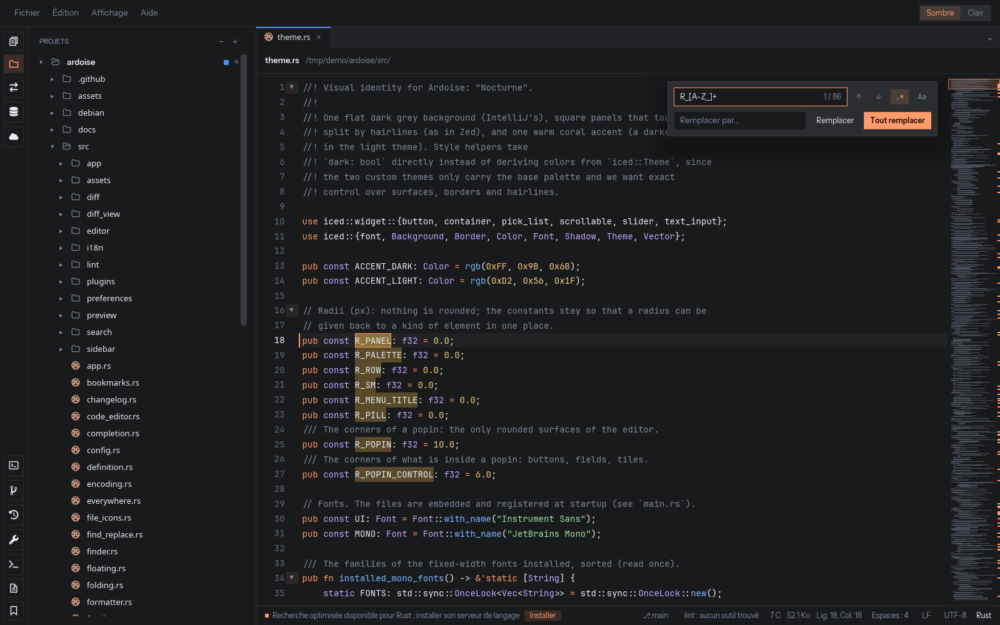
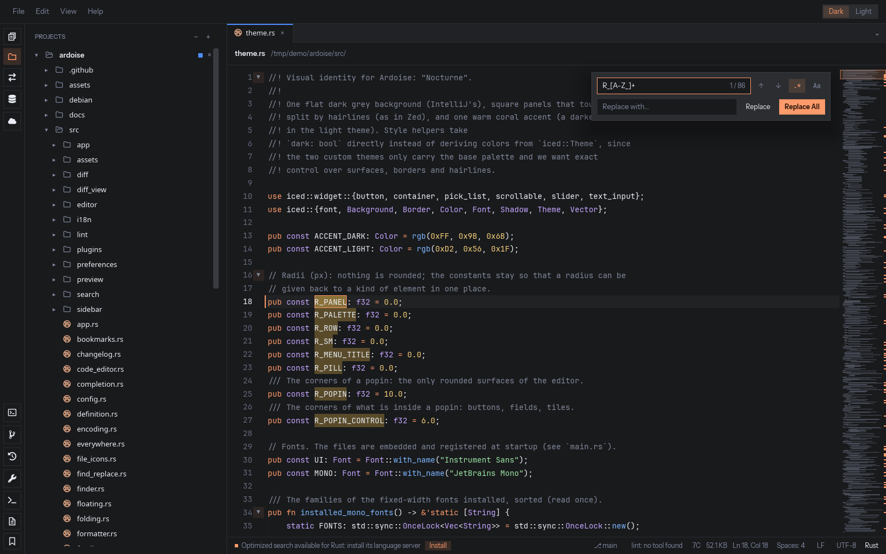

RechercheSearch
Rechercher et remplacer, dans les fichiers, et « Rechercher partout ».Find and replace, in files, and Search everywhere.
Rechercher et remplacerFind and replace
Édition › Rechercher › Rechercher / Remplacer… (Ctrl+F) cherche dans le fichier courant, avec expressions régulières et option de casse.
Edit › Find › Find / Replace… (Ctrl+F) searches the current file, with regular expressions and a case option.


La barre de recherche/remplacement ouverte avec une expression régulière, les occurrences surlignées dans le fichier.The find/replace bar open with a regular expression, matches highlighted in the file.
Capture à venirScreenshot to comeDans les fichiersIn files
Ctrl+Shift+F cherche dans tous les projets ouverts ; Ctrl+Shift+R remplace dans les fichiers. L'historique de ces recherches et remplacements est conservé ; il s'efface dans Préférences › Éditeur › Historique. Le plugin Historique local garde l'état des fichiers avant un remplacement : vous pouvez revenir en arrière.
Ctrl+Shift+F searches every open project; Ctrl+Shift+R replaces in files. The history of these searches and replacements is kept; clear it in Preferences › Editor › History. The Local History plugin keeps the files' state before a replace: you can go back.
Rechercher partoutSearch everywhere
Un seul champ pour tout trouver. Les onglets filtrent par type : Tout, Classes, Fichiers, Symboles, Actions, Texte (dans les fichiers) et Plugins (ce qu'ils proposent : branches, commits…).
One field to find everything. The tabs filter by kind: All, Classes, Files, Symbols, Actions, Text (in files) and Plugins (what they offer: branches, commits…).
- Fichiers : un nom de fichier ou de dossier, ou
nom:lignepour aller à une ligne.Files: a file or folder name, orname:lineto go to a line. - Symboles : fonction, méthode, champ, variable… (
Type.nom).Symbols: function, method, field, variable… (Type.name). - Actions : une action ou un réglage ; tapez
/pour lister les réglages et les pages.Actions: an action or a setting; type/to list settings and pages. - Entrée sur un résultat le copie quand l'astuce l'indique ; « Ouvrir dans Résultats » garde la liste dans un onglet.Enter copies a result when the hint says so; “Open in Results” keeps the list in a tab.
- Un clic droit sur une action lui donne une abréviation de votre choix ; la liste se gère dans Préférences › Éditeur › Rechercher partout.A right click on an action gives it an abbreviation of your choice; the list is managed in Preferences › Editor › Search everywhere.
Ouvrir Rechercher partout, taper un nom, parcourir les onglets Fichiers / Symboles / Actions, ouvrir un résultat.Open Search everywhere, type a name, flip through the Files / Symbols / Actions tabs, open a result.
Vidéo à venirVideo to come